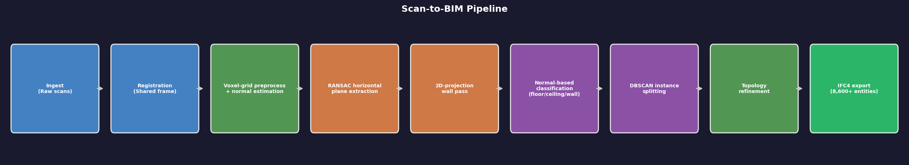

A classical geometric pipeline that reconstructs a multi-storey commercial building from raw terrestrial laser scans (225M+ points across a ground floor and mezzanine) into an IFC4 building model. The original work was developed against non-public client data; this writeup is the methods and evaluation story, and a public-dataset reimplementation is in progress (see below).

The finding: confident misclassification hides inside good-looking summaries
A mid-version of the pipeline reported 99.95% of points classified, with clean-looking wall instances. Auditing per-class point normals told a different story: the ceiling class had a median |n·z| of 0.189 where a real ceiling should sit near 1.0. Cross-checking all wall-oriented points in the cloud, only a small fraction had landed in the wall class — most sat inside the ceiling class. The interior partition network was present, confidently labeled, and wrong. The mechanism: the horizontal RANSAC pass ran first with a large plane budget and consumed the biggest inlier pools, starving the wall pass through inlier competition.
Confidently misclassified is not the same failure as unclassified, and standard coverage metrics cannot tell them apart.
The fix
An independent wall-extraction pass operating on a 2D projection — which cannot be starved by horizontal RANSAC — plus a permanent wall_capture_audit metric gate: the share of wall-oriented points (by normals) actually captured by the wall class. After the fix, wall capture rose to roughly 95% on the ground floor and 86% on the mezzanine, with strong room-enclosure scores.
Evaluation design
Percent-classified is the wrong success metric; per-class geometric self-consistency is the honest signal — do floor normals point up, do wall normals lie flat, do walls enclose rooms. For comparing reconstructed geometry to a reference, instance-matched 3D-IoU is brittle for thin elements (a wall-thickness offset alone collapses it); a class-level voxel-overlap measure evaluates what was actually reconstructed. A cheaper lesson came earlier: a return-value bug had one stage reporting a pre-fix cloud, which made every downstream number meaningless until the actual point cloud was loaded and checked class by class. Verify with the data, not the printed summary.
Public reimplementation
The core that carries the finding is now a runnable, modular package: voxel preprocessing and normals, iterative RANSAC plane extraction, the independent 2D-projection wall pass, normal-based classification, the wall_capture_audit gate, and an IFC4 export (IfcOpenShell with a pure-Python STEP fallback, emitting IfcWallStandardCase). It builds on BIMStruct3D (Chamseddine et al., EC³ 2026), whose instance-matching-free voxel-overlap metric, vIoU, I adopt for honest geometric comparison. Related open tooling such as Cloud2BIM tackles the same point-cloud-to-IFC problem while deliberately avoiding RANSAC; the contrast is part of what makes the confident-misclassification audit worth showing.
A reproducible synthetic scene is included as a fast smoke test that the pipeline runs and the metrics compute. The headline failure mode — walls absorbed into the ceiling class — only manifests on real cluttered junction geometry, so the audit's value is shown against labelled real scans (University of Porto / INESC TEC, CC BY 4.0; ISPRS TUB), not the clean synthetic demo.